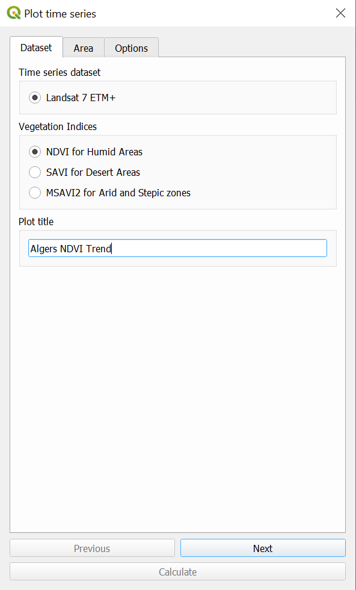
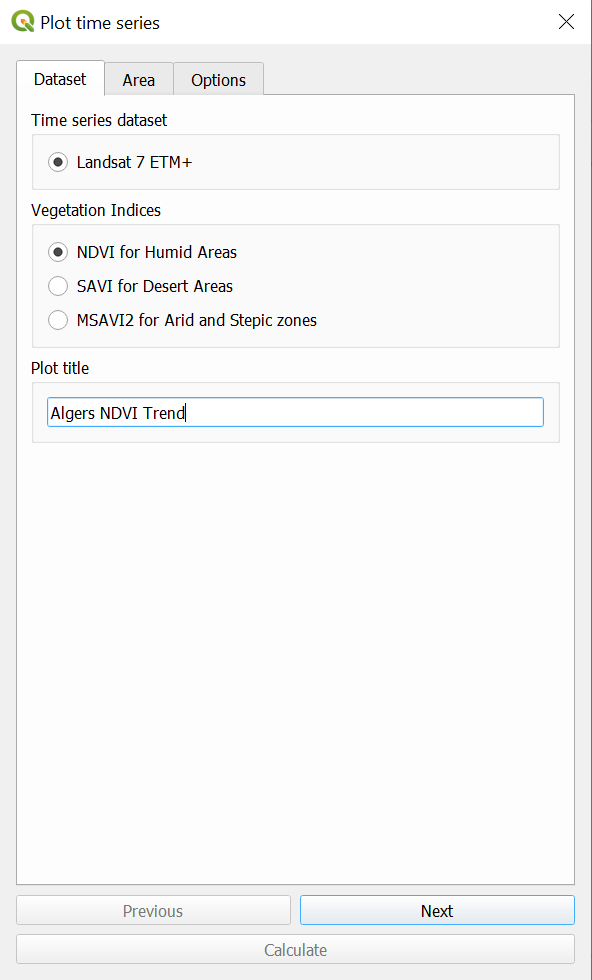

Plot data¶

To view plotted time series, select the time series tool below from the calculate icon. This will open up the Plot data dialog box:
The toolbox also supports plotting time series showing how a particular indicator has changed over time for NDVI, MSAVI2 and SAVI vegetation indices for Landsat 7 (2001-2020). To use this feature, click on the Plot data button from the toolbox bar. Then select a dataset, indicator, and area to plot:
 


When all the parameters have been defined, click Calculate, and the task will be submitted to Google Earth Engine for computing. When the task is completed (processing time will vary depending on server usage, but for most countries it takes only a few minutes most of the time), you’ll receive an email notifying you of the successful completion of the task.
Use the View Google Earth Egngine tasks tool described above to download and plot the results: